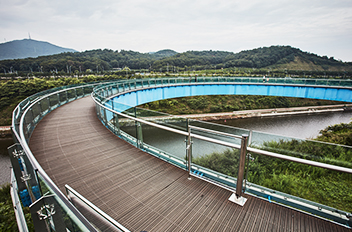
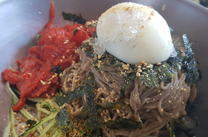
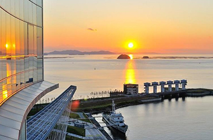

이미지출처 : 인천관광공사 홈페이지

아라마루는 투명한 강화유리바닥으로 구성된 스카이 워크 전망대로, 아라뱃길을 한눈에 볼 수 있습니다. 아라폭포는 계양산 협곡의 지형을 이용해 수직적 경관을 연출해 내는 국내 최대의 인공폭포입니다. 아라폭포의 수변 산책길은 인공폭포까지 계단으로 이어져 있어 6개 폭포의 다양한 모습과 그 장대함을 바로 옆에서 느낄 수 있으며, 조명으로 단장한 야간에도 색다른 모습의 폭포를 만날 수 있습니다.
| 위치 | 인천광역시 계양구 아라로 228 경인아라뱃길 아라마루 |
|---|---|
| 전화 | 1899-3650 |

한국을 대표하는 한옥건물에서 먹는 건강식 메밀전과 부담 없이 아이들과 함께 먹을 수 있는 막국수가 일품입니다.
| 위치 | 인천광역시 계양구 학고개길 15-29 |
|---|---|
| 전화 | 032-567-7723 |

수향이란 물길 주변의 아름답고 특색있는 지역을 의미하는 것으로 아라뱃길에는 8개의 수향 지역이 있습니다. 서해, 인천터미널, 시천가람터, 아라폭포, 수향원, 두리생태공원, 김포터미널, 한강둔치를 수향 8경이라 합니다. 경인아라뱃길은 운수로를 따라 관광거리인 수향8경이 조성돼 있고, 자전거도로와 19개의 친수구역, 국내 최대의 인공폭포 아라폭포와 두물머리생태공원, 수향원 등 다양한 볼거리를 제공하고 있습니다.
| 위치 | 인천광역시 계양구 아라로 228 |
|---|---|
| 전화 | 032-569-5111 |